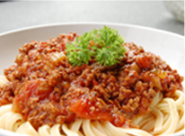
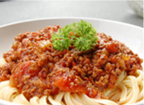

意大利田园面+土豆泥+香浓牛奶
手机APP网上订餐只需 $17.9
精品超值早餐
某某西餐厅
某某西餐厅美食，均采用自最安全的各种上等有机食材，由专业西餐厨师精心烹调而成。所用全部沙拉酱及配菜酱汁坚持自己秘方调制，绝对不添加任何食品增味剂，色素及味精等，带给您与众不同的用餐体验并确保您在杰克西餐享用的每一道菜品，都会给您留下深刻的回味印象。带给您与众不同的用餐体验并确保您在杰克西餐享用的每一道菜品，都会给您留下深刻的回味印象。
美味甜品
甜品，是不能做正餐的东西，自然也不用顾忌营养或者其他一些禁锢我们口味偏好的规矩之类，只要好吃全部都可饮用甜品以成为点心。
休闲茶饮
茶道，就是品赏茶的美感之道。茶道亦被视为一种烹茶饮茶的生活艺术，一种以茶为媒的生活礼仪，一种以茶修身的生活方式。
正餐主食
现代英国工人阶级家庭则是当是作点心。外国人一天中都比较忙碌，所以早餐和午餐都没时间认真吃只有到了晚上才回精心准备丰盛的晚餐。
风味牛扒
“吃牛扒”也许是现今的都市一族大时尚，三伏之日更迷恋西式生活：泡吧，吃西餐……真真正正做着都市夜归人。牛排，可谓吃西餐的代名词。
 

鲜嫩多汁的烤牛排
06/06/2014 - 50条评论
“吃牛扒”也许是现今的都市一族大时尚，三伏之日更迷恋西式生活：泡吧，吃西餐……真真正正做着都市夜归人。牛排，可谓吃西餐的代名词。
READ MORE
香滑爽口的冰激凌
06/06/2014 - 10条评论
甜品，是不能做正餐的东西，自然也不用顾忌营养或者其他一些禁锢我们口味偏好的规矩之类，只要好吃全部都可饮用甜品以成为点心。
READ MORE
弹性劲道的肉酱意面
06/06/2014 - 10条评论
意大利面，又称之为意粉，是西餐品种中最接近中国人饮食习惯，最容易被接受的。源由马可·波罗从中国经由西西里岛传至整个欧洲的讲法。
READ MORE
- 缤纷美食
- 开胃菜
- 沙拉
- 冷盘
- 主食
- 饮料
- 甜品
- 汤
- 面食
- 优惠活动
- 扫码送现金劵
- 自助酒会
- 婚宴预定送蜜月旅行
- 智力问答
- 商品促销
- 马尔代夫风情披萨
- 焦糖玛奇朵
- 水果拼盘
- 丹麦芝士焗饭
- 宴会订制
- 国宴预订
- 婚宴预订
- 会员中心
- 会员登录
- 会员注册
- 积分换购
- 身份认证
- 关于我们
- 最新资讯
- 本店资质
- 联系我们
- 友情链接
深圳网站建设 深圳网站建设 深圳网站建设 深圳网站建设 深圳网站建设 深圳网站建设 深圳网站建设 深圳网站建设 深圳网站建设 深圳网站建设 深圳网站建设 深圳网站建设
服务热线：400-123-4567
Copyright © 2011-2012 COTRAN All Rights Reserved 深圳市某某西餐厅 粤ICP备12345678号
站长统计